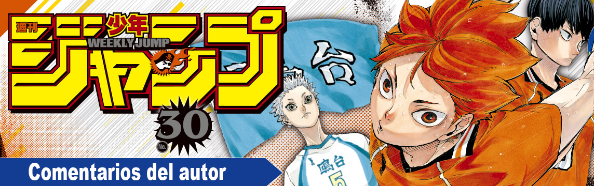
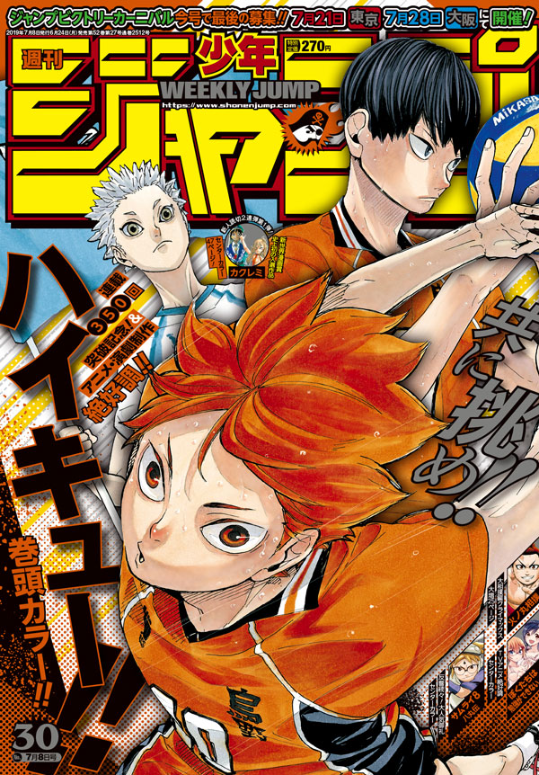

Los puestos y comentarios de los autores de la Weekly Shonen Jump de esta semana.

One Piece

He ido a mi primer concierto Yuzu. Es increíble cómo dos personas con sus guitarras son capaces de crear tanta energía.
Guardianes de la noche

Molesto al camarero diciéndole "tortilla" cuando realmente quiero pedir té chai.
Dr. STONE

Las cosas que los isleños utilizan como ingredientes son conchas, perlas y otras cosas provenientes del mar. No entiendo las algas.
My Hero Academia

Llego un poco tarde, pero estoy emocionado por la película live-action de Akira. Esa ha sido mi semana.
Samurai8 - La leyenda de Hachimaru

Estoy tan feliz de que Como Entrenar a tu Dragón 3 va a ser estrenada en cines en Japón!
Chainsaw Man

He estado trabajando mientras leía Kaidan de Junji Ito y veía The Wailing de Na Hong-jin.
Double Taisei

Tengo un ojo vago, pero hacen gafas para solo un ojo? Como un Scouter?
We Never Learn

Estoy tan feliz de que haya tanto merchandising! Mi estudio está decorado con cosas de We Never Learn!
Beast Children

Estaba haciendo estiramientos intensivos y me fracturé una pierna. Suele pasar...?
The Promised Neverland

Estuve eligiendo cuidadosamente que canción poner durante el trabajo y se pasaron 2 horas volando! Me estaba divirtiendo mucho! No me voy a ir a dormir!
Hinomaru Sumo

Me siento super honrado de poder ser publicado junto a kinnikuman! ... es lo que quería decir la semana pasada pero se me olvidó por completo!
Tokyo Shinobi Squad

Comer natto con vinagre de alga mozuku es muy saludable. Puedes ponerle mostaza si quieres.
ACT-AGE

Tsukuda sensei ha estado ayudandome desde los tiempos en el que presente mi historia "King". Felicidades a ambos autores!
Jujutsu Kaisen

Probablemente os hayáis dado cuenta ya, pero estoy fingiendo saber cosas sobre Givenchy.
The Last Saiyuki

Una persona me hizo darme cuenta de que siempre cierro los ojos cuando bebo algo. Nunca me di cuenta.
Yui Kamio Lets Loose

Vi la nueva película de Godzilla. Me encanta cuando aparece Godzilla y el tema principal empieza a sonar.
Haikyu!!
Haruichi Furudate
El volumen 1 de Tokyo Yohei Kabushikigaisha de mi viejo amigo Kohei Uchida ya está a la venta en Japón!